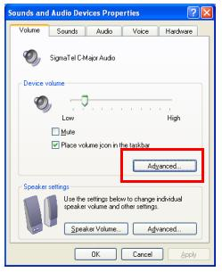
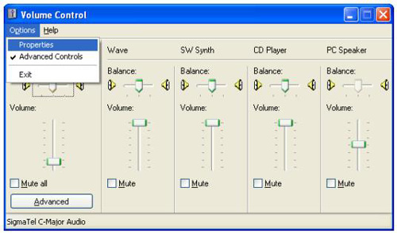
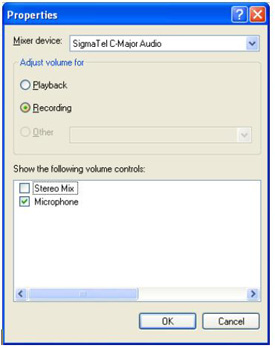
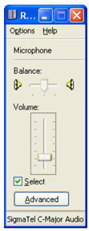
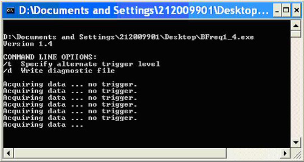

Proprietary to General Electric
Direction 5196839-800, Rev# 6
RT16 and Xtra Service Info Adv
Proprietary to General Electric |
| Last Revised on: | 30 November 2007 |
This procedure prepares a Windows based Laptop/PC for use of the microphone and Belt Frequency Adjustment software. The following topics are covered:
Section 1 - Tools and Test Equipment
Section 2 - Setup Laptop/PC for Microphone
Section 3 - Install and Start the Belt Frequency Tool Software
Section 4 - Tool Theory, Process Summary, and Microphone Operation
BFreq1_4.exe (Part# 5220799)
| NOTE: | The software was also provided to GE Healthcare personnel
in FMI 25400. If you already have this software on your laptop/PC
there is no need to acquire it. If you do not have this software it
can be acquired two ways:
|
Condenser Type Microphone (Part# 5224640)
| NOTE: | If you don’t have a microphone, which must be a condenser type and not a noise canceling type, order the microphone (PN # 5224640). It is a FRU part. |
Plug the microphone into your laptop/PC microphone port. The microphone port location will vary depending on the type of laptop/PC. Make sure to plug into the microphone port and not the headphones port.
Setup Audio properties on your PC/laptop as follows:
(For Windows XP) Refer to Section 2.1.
(For Windows 2000) Refer to Section 2.2.
Select Start → Control Panel.
On the Control Panel screen, open the Sounds and Audio Devices item.
In the Sounds and Audio Devices Properties window, select the Volume tab then select [Advanced] . See Illustration 1.
Illustration 1: Volume Setup

In the Volume Control window, select Options → Properties. See Illustration 2.
Illustration 2: Volume Control

In the Properties window, select Recording and, depending on mixer device, either Microphone or External Mic. Make sure Stereo Mix is not selected. Then select [OK] . For an example mixer device, see Illustration 3.
Illustration 3: Selecting Microphone (Example)

Set the microphone Volume to approximately 25% (it is very important to match the picture below as close as possible in setting the volume level) and be sure that the Select box has a checkmark. You can leave the microphone window open on your desktop. See Illustration 4.
Illustration 4: Volume Adjustment

On you laptop/PC select Start → Control Panel.
On the Control Panel screen, open the Sounds and Multimedia Devices item.
Select the Audio tab then select Sound recording.
Select the Volume tab and on the Volume control select Options → Properties.
In the Adjust Volume for, select the [Recording] button and make sure the box next to Microphone is "checked".
Select [OK] .
Be sure the Volume is turned to 25% and the Select box is "checked".
You can keep this window open.
This section will setup the software program required to adjust the belt tension.
Start the program as follows:
If you have the media disk (PN # 5220799), insert the media disk into the media tray of the laptop/PC. The media disk should “Autorun”, which will launch the program and start it running. See Illustration 5.
Illustration 5: Bfreq1_4.exe Program Running

| NOTE: | The name of the program file is Bfreq1_4.exe. The program is automatically stored on your laptop desktop. You will not need the CD to run the program in the future since you can just double click the file on your desktop. |
(For GE Healthcare personnel only) If you downloaded the program from the website, navigate to the program on your laptop and launch the program. The program must run from your desktop.
Check the operation of the microphone by talking into it. The program will show ‘OVERLOAD’ or a frequency value if the microphone is set up correctly and your sound card is working properly. For additional help, refer to Section 4.3.
A sound card and compatible microphone are used to sense the oscillating pressure around a freely vibrating belt. Plucking the belt with a finger initiates the free vibration. The frequency of free oscillation is related to the tension in the belt, the belt span, and mass density of the belt material. This is the same relationship governing the vibration frequency (pitch) of piano and guitar strings as well.
The belt frequency tool captures 3 seconds of recorded data surrounding a belt pluck. The tool uses an algorithm to find the maximum amplitude signal within the 3 seconds of data for the filtered hi/low amplitude range. The program reports the frequency of that signal. The maximum amplitude signal should be from the first vibration mode of the belt (where belt span equals 1/2 wavelength). By finding the maximum amplitude signal within the three seconds of data, this helps to eliminate background noise fooling the program (this is better than reporting the first signal recorded which may be background noise if you do not pluck at the very beginning of the 3 seconds). Plucking the belt harder or softer does not change the first vibration mode frequency. The program is also set up to filter very high or very low amplitude signals. If you pluck too soft, no trigger will be reported. If you pluck too hard, overload will be reported. This amplitude filtering also helps to eliminate background noise. You must calibrate pluck to be within the correct amplitude range. Once you pluck within the correct amplitude range consistently, you will report consistent first mode frequency for the belt span which can be compared against the frequency specification.
This tool is very similar to other commercially available belt tension measurement devices. It uses similar operating principles of recording sound and reporting back the first vibration mode frequency of the belt.
Adjusting a belt using this software and microphone is an iterative process. The basic steps are:
Setup the software and microphone.
Start the program. (It will be “listening” immediately upon its launch).
Prepare the belt for adjustment by loosening its holding clamp/bolt.
Place the microphone within 1 inch (2-3cm) from center of belt being adjusted.
Pluck the belt with your finger. This vibration will be recorded and a value displayed.
Adjust the belt.
Repeat this process until the frequency measurement falls within the range of the specification.
Read this completely and refer to this section as needed when adjusting belt tension. By holding the microphone close to the belt and plucking the belt one time per time capture block, the program will record the first vibration mode frequency of the belt. The frequency that is recorded can be compared to the frequency specification for the belt.
It is important to use this tool in a quiet location. Minimize external noise as much as possible.
It is important to hold the microphone by the handle and not touch the actual microphone during measurements. Holding the actual microphone will cause finger-generated noise that can fool the program.
Hold the microphone 2 -3 cm (about an inch) from the center of the belt span being measured. Do not hit the microphone with your fingers or bump the microphone into anything when plucking the belt.
Pluck the belt with your fingertip or fingernail. The belt should be released sharply like when plucking a guitar string. Generally the belt needs to be displaced about 1mm (less than 1/16th of an inch) or less from rest position when plucking it.
Pluck the belt one time immediately after the program writes a new “Acquiring data” line. It is important to take the measurement immediately so that the program can record the entire belt vibration within the three second acquisition block.
If after plucking a belt “no trigger” is displayed after block capture, either move the microphone closer or increase the amount that the belt is displaced from the rest position (i.e. increase the intensity). And similarly if after plucking a belt “OVERLOAD” is displayed after block capture, either move the microphone further from the belt or decrease the amount that the belt is displaced from the rest position when plucked.
Here and there you will get some false/odd readings. Ignore them. It is probably due to background noises. Continue to take measurements until consistent results are achieved. In a quiet area with careful control, results will be very repeatable.